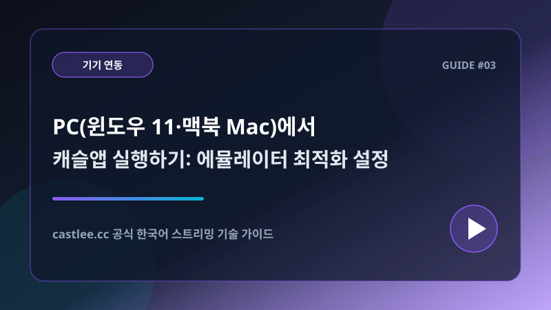

설치 가이드
설치 가이드
캐슬앱(Castle App) 최신 버전 APK 다운로드 및 안드로이드 완벽 설치 가이드
안드로이드 기기에서 알 수 없는 앱 출처 허용 설정부터 무결성 해시 검증, 설치 후 초기 권한 구성까지 초보자도 3분 만에 따라 할 수 있는 표준 설치 절차를 상세히 안내합니다.


설치·기기 연동·한글 자막·화질 최적화·보안까지 원하는 주제를 클릭해 바로 열람하세요.
설치 가이드
안드로이드 기기에서 알 수 없는 앱 출처 허용 설정부터 무결성 해시 검증, 설치 후 초기 권한 구성까지 초보자도 3분 만에 따라 할 수 있는 표준 설치 절차를 상세히 안내합니다.
기기 연동
구글 TV, 샤오미 미박스, 파이어 TV 스틱 및 일반 스마트 TV에서 다운로더 앱과 무선 파일 전송을 활용해 대화면 홈시네마 환경을 구축하는 핵심 노하우입니다.

기기 연동블루스택, LD플레이어, 윈도우 서브시스템 및 애플 실리콘 맥 환경에서 CPU 가상화와 그래픽 렌더러를 최적화하여 대화면 모니터로 감상하는 법을 소개합니다.
기능 활용
해외 영화와 시리즈 시청 시 필수적인 한글 자막 자동 매칭, 가독성 높은 자막 스타일 디자인, 0.1초 단위 싱크 보정 및 다중 음성 전환 비법을 공개합니다.
화질·최적화
해상도별 시간당 데이터 소모량 비교표부터 하드웨어 디코딩 가속, 적응형 비트레이트(ABR) 고정 방법과 무제한 요금제 맞춤 설정을 한눈에 확인하세요.
 기능 활용
기능 활용
와이파이 환경에서 드라마 전편을 고속으로 일괄 저장하고 비행기 모드에서 끊김 없이 감상하는 오프라인 보관함 관리와 저장소 최적화 전략입니다.
오류 해결
와이파이 신호는 강하지만 영상이 멈출 때 효과적인 DNS 변경법, 스트리밍 미러 서버 스위칭, 코덱 전환 및 캐시 초기화 해결책을 완벽 정리했습니다.
 기능 활용
기능 활용
실시간 라이브 스트리밍 특유의 지연 시간을 줄이고 60fps 역동적인 스포츠 화면을 부드럽게 감상하기 위한 경기 일정 알림 및 플레이어 세팅 가이드입니다.
 보안·안전
보안·안전
외부 설치 파일 이용 시 반드시 확인해야 할 디지털 서명 진위 판별, 최소 권한 원칙 적용, 네트워크 프라이버시 보호 수칙을 보안 관점에서 짚어봅니다.
 설치 가이드
설치 가이드
인앱 자동 업데이트 알림 활용법부터 앱이 설치되지 않음 패키지 충돌 오류 해결, 버전별 주요 개선 사항과 롤백 시 주의점을 정리했습니다.
 기능 활용
기능 활용
화면 스와이프 밝기·볼륨 조절, 더블 탭 구간 이동, 1.25x~2.0x 스마트 배속 재생과 나만의 인생 영화 리스트를 체계적으로 정리하는 꿀팁 모음입니다.
 오류 해결
오류 해결
안드로이드·iOS·스마트 TV·PC 지원 범위 비교부터 설치 오류, 자막 깨짐, 데이터 소모량까지 처음 시작하는 분들을 위한 올인원 질의응답 백과사전입니다.
모바일과 거실 미디어 환경이 빠르게 진화하면서 하나의 애플리케이션으로 영화, 글로벌 드라마 시리즈, 다큐멘터리, 애니메이션, 그리고 실시간 스포츠 생중계까지 끊김 없이 감상하려는 수요가 꾸준히 높아지고 있습니다. 캐슬앱(Castle App)은 직관적인 사용자 인터페이스와 가벼운 구동 엔진, 정밀한 다국어 자막 시스템, 그리고 적응형 고화질 스트리밍 프로토콜을 결합하여 안드로이드 스마트폰은 물론 스마트 TV와 데스크톱 PC까지 폭넓게 아우르는 올인원 미디어 플레이어 경험을 제공합니다. 본 종합 백서(castlee.cc)에서는 처음 입문하는 이용자부터 기기별 최고 성능을 끌어내고자 하는 고급 사용자까지 반드시 알아두어야 할 핵심 아키텍처와 최적화 전략을 심도 있게 다룹니다.
쾌적한 영상 재생 품질을 결정짓는 가장 중요한 기술적 기반은 네트워크 상태 변화에 유연하게 대응하는 적응형 비트레이트 스트리밍(ABR, Adaptive Bitrate Streaming)과 기기 칩셋의 전용 미디어 블록을 직접 활용하는 하드웨어 디코딩 가속(MediaCodec HW+)입니다. 캐슬앱은 HLS 및 DASH 전송 규격을 기반으로 사용자의 와이파이 혹은 5G·LTE 대역폭을 실시간으로 분석하여 초기 버퍼링 지연을 최소화하는 패스트 스타트(Fast-Start) 메커니즘을 구동합니다. 덕분에 사용자는 재생 버튼을 누른 직후 수 초 이내에 첫 화면을 확인할 수 있으며, 안정적인 광랜 환경에서는 1080p 풀HD 및 고비트레이트 원본 화질로 고정하여 시네마급 선명도를 유지할 수 있습니다.
또한 고효율 비디오 코덱인 HEVC(H.265) 스트림 처리 능력을 갖추고 있어 기존 H.264 코덱 대비 약 35%에서 40% 적은 데이터 용량으로도 동등 이상의 디테일과 색재현력을 구현합니다. 이는 이동 중 모바일 데이터 요금제를 아껴야 하는 출퇴근길 시청자나 공유기 신호가 약한 침실 환경에서 버퍼링 발생 빈도를 획기적으로 낮춰주는 핵심 비결입니다. 세부적인 해상도별 데이터 소모량과 고정 방법은 1080p·4K 고화질 재생 및 데이터 절약 가이드에서 자세히 확인하실 수 있습니다.
설치를 시작하기 전 현재 보유하고 계신 스마트 기기의 운영체제와 하드웨어 스펙을 아래 표준 권장 사양표와 대조해 보시면 가장 적합한 설치 경로를 즉시 선택할 수 있습니다. 안드로이드 스마트폰과 태블릿은 별도의 변환 과정 없이 네이티브 APK 패키지로 직접 설치되며, 거실의 구글 TV·파이어스틱이나 데스크톱 윈도우·맥북 환경 역시 전용 연동 가이드를 통해 손쉽게 구성할 수 있습니다.
| 구분 디바이스 | 지원 운영체제 / 구동 방식 | 권장 메모리 및 네트워크 | 맞춤 상세 매뉴얼 |
|---|---|---|---|
| 안드로이드 스마트폰·태블릿 | Android 7.0 이상 (Android 10+ 권장) / 네이티브 APK | RAM 3GB 이상 · Wi-Fi / 5G / LTE | 안드로이드 설치 가이드 → |
| 스마트 TV · 파이어스틱 | Android TV / Google TV / Fire OS 사이드로딩 및 캐스트 | 5GHz Wi-Fi 또는 유선 랜 권장 | 스마트 TV 연동 가이드 → |
| 윈도우 11 PC · 맥북(Mac) | BlueStacks 5 / LDPlayer 9 / Apple Silicon 가상화 | CPU 4코어 할당 · RAM 4GB 이상 | PC·맥 구동 가이드 → |
| 오프라인 보관 환경 | 내부 스토리지 또는 UHS-I U3 외장 마이크로SD | 여유 저장 공간 최소 2GB 이상 | 오프라인 저장 가이드 → |
설치를 마친 직후 단 2분만 투자하여 아래 네 가지 환경설정을 미리 적용해 두면, 매번 영상을 켤 때마다 메뉴를 다시 만질 필요 없이 처음부터 최적화된 한국어 시청 환경을 누릴 수 있습니다.
one.one.one.one을 등록해 스트림 서버 응답 속도를 개선합니다.공식 앱스토어 외부에서 설치 패키지를 내려받아 사용할 때는 보안 의식을 갖추는 것이 무엇보다 중요합니다. 출처가 불분명한 메신저 단축 링크나 용량이 수 메가바이트에 불과한 위장 실행 파일은 철저히 배제해야 하며, 설치 전 바이러스토탈(VirusTotal)을 통한 악성코드 유무 스캔과 디지털 서명 일치 여부를 점검하는 습관을 권장합니다. 또한 미디어 스트리밍 앱에는 저장소 및 네트워크 외에 주소록, 문자메시지(SMS), 통화 기록, 정밀 위치 같은 불필요한 민감 권한을 절대 허용하지 않는 최소 권한 원칙을 지켜야 합니다. 더욱 구체적인 점검 항목은 캐슬앱 보안성 검증 및 개인정보 보호 체크리스트와 안전한 버전 업데이트 가이드에 상세히 수록되어 있습니다.
영화와 시리즈 감상 외에도 주말 해외 축구 빅매치나 야구, 농구, 격투기 등 생동감 넘치는 현장을 실시간으로 즐기고 싶다면 라이브 탭의 KST 경기 일정 알림 예약과 60fps 고프레임 예비 피드 전환 노하우를 익혀두시기 바랍니다. 실시간 스포츠 및 라이브 채널 시청 가이드와 인터페이스·보관함 200% 활용법을 차례대로 살펴보시면 스마트폰, 태블릿, 거실 스마트 TV를 완벽하게 아우르는 나만의 프리미엄 스트리밍 센터를 완성하실 수 있습니다.
안드로이드 7.0 이상 스마트폰 및 태블릿에서 네이티브 APK로 즉시 구동되며, 안드로이드 TV·구글 크롬캐스트·아마존 파이어스틱에서는 사이드로딩 방식으로 대화면 시청이 가능합니다. 윈도우 11 PC와 맥북에서는 안드로이드 에뮬레이터를 통해 실행할 수 있습니다.
네, 앱 내 재생 설정에서 기본 우선 자막 언어를 한국어(Korean)로 지정하면 한글 자막 트랙이 자동 활성화됩니다. 또한 플레이어 우측 자막 타이밍 메뉴에서 0.1초 단위로 싱크를 앞당기거나 늦출 수 있고 외부 SRT·SMI 파일 불러오기도 완벽 지원합니다.
버퍼링이 발생할 때는 안드로이드 프라이빗 DNS를 one.one.one.one으로 설정하거나 플레이어 상단의 대체 미러 서버(Server 2/3)로 전환하면 즉시 개선됩니다. 소리만 나고 검은 화면이 뜰 때는 디코더 모드를 HW에서 SW로 변경하면 바로 해결됩니다.
가능합니다. 와이파이 환경에서 작품 상세 화면의 다운로드 아이콘을 눌러 720p 또는 1080p 화질로 미리 저장해 두면 비행기 모드나 지하철 음영 지역에서도 모바일 데이터 소모 없이 끊김 없는 감상이 가능합니다.
설치 전 APK 용량(통상 45~65MB)과 바이러스토탈(VirusTotal) 보안 스캔 결과를 확인하고, 주소록·통화·SMS 등 미디어 재생과 무관한 민감 권한은 차단하며 설치 직후 브라우저의 알 수 없는 앱 허용 옵션을 다시 꺼두는 것이 안전합니다.